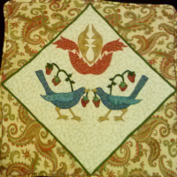

Man Quilter
What I would rather be doing to pay the bills...
Published Apr 9, 2018
Although I consider myself a jack of all trades and a master of none, I am at heart an artist. As I am also at that time in life when I need to think about retirement, I have decided that my retirement will be in quilting. I am undecided if I want to take the plunge and start a long arm quilting business or just stick with designing and executing my own original creations. Maybe a blend of both? I am only just in the planning stages now.
What inspires me? Definitely nature — primarily the color and amusement of nature. I am also an avid gardener with deep roots in the rich soil of the Pennsylvania farmland of my birth. I am also drawn to the classical and neo-classical world of Western Europe — order, composition, harmony, structure; the transcendentals of Beauty, Goodness, and Truth.
But I also like the element of surprise and unexpected delight. There is a delicious word in Italian that defies easy translation — sprezzatori. It's best understood as something not necessary but essential — a little touch of surprise to delight the senses. An example? Led Zeppelin’s “Fool in the Rain” from 1979’s In Through the Out Door. Yes, many say its Led Zeppelin’s worst song and a sellout to disco, but in reality it’s one of their most brilliant simply because it defies convention. When the whistle hits at the end of the second minute and everything collides into a wild bossa nova beat — that’s pure musical genius — an unexpected surprise — a sprezzatori! That’s me and my approach to quilt design.